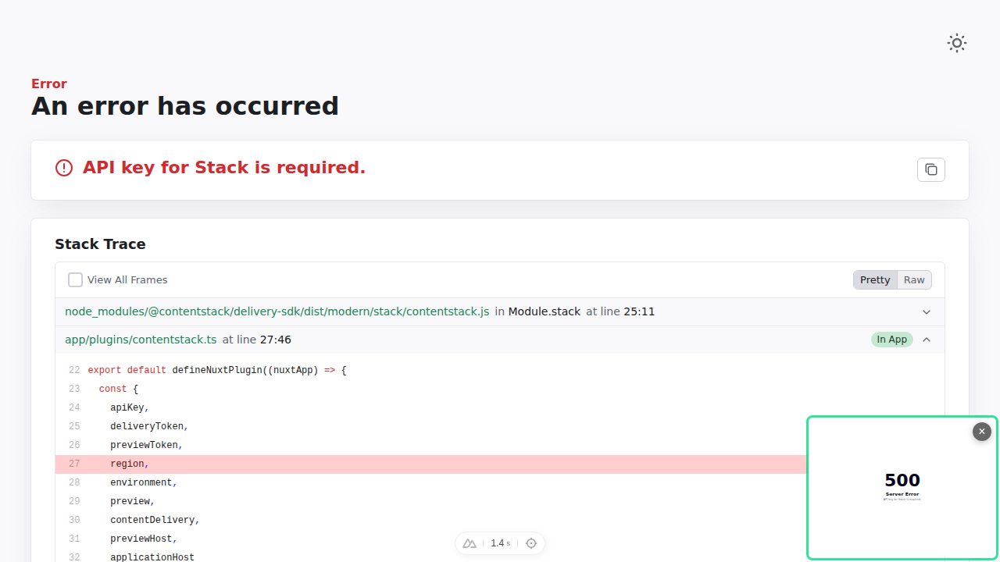

| Status | Type | Step | Detail |
|---|---|---|---|
| SKIPPED | unknown | Prerequisites | manual/unknown step — reported only |
| PASS | shell | Clone the Repository | ✓ git clone https://github.com/contentstack/kickstart-nuxt.git cd → /home/runner/work/Developer-Resources/Developer-Resources/kickstart-automation/workdir/nuxt/kickstart-nuxt |
| PASS | shell | Install Dependencies | ✓ npm install |
| BROKEN | cli | Create a Stack | ✓ npm install -g @contentstack/cli ✓ csdx config:set:region AWS-EU ✓ csdx auth:login ↳ read Org ID from Org Admin → Info: blt8a2114027fb46d20 ↳ UI labels verified on screen: Info ↳ GAP: doc names UI item(s) not found in the app: Org Admin — the doc's click-path may be outdated ✓ csdx cm:stacks:seed --repo "contentstack/kickstart-stack-seed" --org "" -n "CS Kickstart Nuxt" ↳ seed output had no api key — resolved "CS Kickstart nuxt mt3lmcjl" via Management API: bltae739d38daf52646 |
| PASS | dashboard | Create a Delivery Token | [ui] delivery token created via UI (preview token yes) UI labels verified on screen: Settings, Tokens |
| BROKEN | env | Setup environment variables | GAP: the doc's env var names do not match what the repo reads (.env.example). Wrote the doc's keys verbatim — the app will not pick up config. doc has (repo doesn't): NUXT_PUBLIC_CONTENTSTACK_API_KEY, NUXT_PUBLIC_CONTENTSTACK_DELIVERY_TOKEN, NUXT_PUBLIC_CONTENTSTACK_PREVIEW_TOKEN, NUXT_PUBLIC_CONTENTSTACK_REGION, NUXT_PUBLIC_CONTENTSTACK_ENVIRONMENT, NUXT_PUBLIC_CONTENTSTACK_PREVIEW repo expects (doc omits): NUXT_CONTENTSTACK_API_KEY, NUXT_CONTENTSTACK_DELIVERY_TOKEN, NUXT_CONTENTSTACK_PREVIEW_TOKEN, NUXT_CONTENTSTACK_ENVIRONMENT, NUXT_CONTENTSTACK_REGION, NUXT_CONTENTSTACK_PREVIEW |
| BROKEN | dashboard | Turn on Live Preview | Live Preview enabled, default preview environment set to "preview" via UI UI labels verified on screen: Settings GAP: doc names UI item(s) not found in the app: Live Preview — the doc's click-path may be outdated |
| PASS | unknown | Project Structure — doc vs repo | all 16 listed items exist in the repo |
| PASS | unknown | Code snippet — plugins/contentstack.ts | snippet matches app/plugins/contentstack.ts (89% of lines present) |
| BROKEN | unknown | Code snippet — composables/getPageData.ts | GAP: doc shows "composables/getPageData.ts" but no such file exists in the repo |
| BROKEN | verify | Run the app — dev server | http://localhost:3000 responded HTTP 500 — app is erroring, not serving content |
| BROKEN | verify | Run the app — page renders | page shows an error: "Server Error" (see screenshot)  |